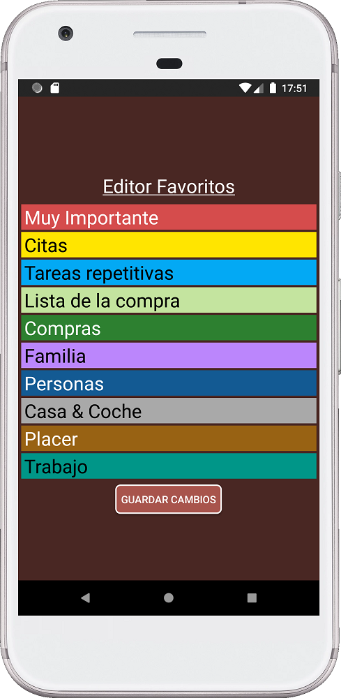

¡Más toques de pantalla y menos escritura! Con esta idea en mente, creé un menú que puedes personalizar a tu gusto. ¿Por qué? Porque la vida de cada persona es diferente, y todos se beneficiarán de un menú que puedas adaptar a tus necesidades. Además, una buena herramienta debe ser fácil de usar. Nadie quiere perder tiempo escribiendo cuando puedes predefinir cosas y seleccionarlas desde un menú.
Básicamente, tienes un menú con 10 categorías. Cada categoría abre una lista diferente.
Puedes cambiar el nombre de cada categoría. Además, también puedes cambiar lo que hay dentro de cada lista.
Una vez que hagas cambios en tus menús, se incluirán en copia de seguridad, por lo que al trabajar en mejorar tu menú no estarás perdiendo tiempo.
¿Por qué SECURElogBook tiene un sistema para el menú? Porque SECURElogBook es un poco más que una simple lista de tareas pendientes. Es una herramienta para ayudarte a: memorizar cosas, hacer seguimiento de eventos, llevar un diario personal, recordatorios y más.
El menú está ahí, por un lado, para hacer las cosas más rápidas, ya que tocarás en lugar de escribir. Por otro lado, tú decidirás cómo nombrar todo. Eso significa que puedes etiquetar tus datos de antemano para facilitar la búsqueda y agrupación de datos y sacar conclusiones. Y sí, SECURElogBook también es una herramienta para analizar tus datos y aprender de ellos.

Este es un ejemplo de cómo preetiquetar tus datos para facilitar su seguimiento. Etiquetar con "AGUA" ayudará a encontrar todo lo relacionado con el agua. En el futuro, si quiero saber cuánta agua he bebido, puedo buscar "agua". Puedes aplicar esta idea a otras categorías si lo deseas.
Otro beneficio de tener una lista es que te ahorrará tiempo, ya que no tendrás que adivinar. Por ejemplo, con la lista de compras. Si te tomas el tiempo para poner todo lo que compras en una lista, esta será larga o corta, pero no infinita. Puedes usar dos o más categorías de menú para dividir los elementos en diferentes categorías si tienes muchos. El punto es que, al pensar en crear la lista de compras, puedes perder tiempo adivinando o puedes mirar tu lista y ver lo que necesitas comprar.
1. Abre SECURElogBook y ve a la ventana principal, con fondo azul:

2. Presiona el botón (I) o toca un registro en la lista (F).
3. Presiona el botón (G) para acceder al menú favorito.
4. Presiona el botón con el signo de interrogación para acceder a la ayuda.
5. Presiona el botón con el ícono de lápiz para editar los nombres de las categorías.

6. Presiona “GUARDAR CAMBIOS” para confirmar los cambios.
7. Presiona el botón de retroceso en tu teléfono para volver atrás.
8. Presiona la categoría “Tareas repetitivas”. Esto abrirá la lista de “Tareas repetitivas”:
9. Podemos seleccionar cualquier texto de la lista y se utilizará como el texto para el registro. Por ejemplo, si seleccionas "Lavar ropa", el programa volverá al menú de registros y colocará "Lavar ropa" como texto para nuestro registro.
10. Si deseas agregar o editar la lista, puedes presionar el botón con el ícono de lápiz:

Esta ventana te permitirá agregar registros presionando el botón con el ícono de suma.
Puedes deslizar hacia la izquierda un registro para eliminarlo.
También puedes eliminar todos los registros si presionas el botón de la papelera.
La lista se ordenará alfabéticamente.
Recuerda que cuanto más tiempo dediques a mejorar tus menús, más tiempo ahorrarás.